Query in. Publication-ready chart out.
dchart is a SQL editor and chart builder that runs in your browser, on your machine. Write a query against your CSV, Parquet and JSON files, then pick one of 14 chart types. The chart comes out styled for a report or a paper: a proper title, quiet gridlines and labels you can read. DuckDB runs inside the binary, so there's no database to set up and nothing leaves your laptop.
curl -fsSL https://cuiqanalytics.github.io/dchart/install.sh | sh
dchart --folder ~/.local/lib/dchart/examples/data
Free. Linux and macOS, x86-64 or arm64. On Windows, in PowerShell: irm https://cuiqanalytics.github.io/dchart/install.ps1 | iex. No account, no telemetry, works offline. Then open http://localhost:4322.
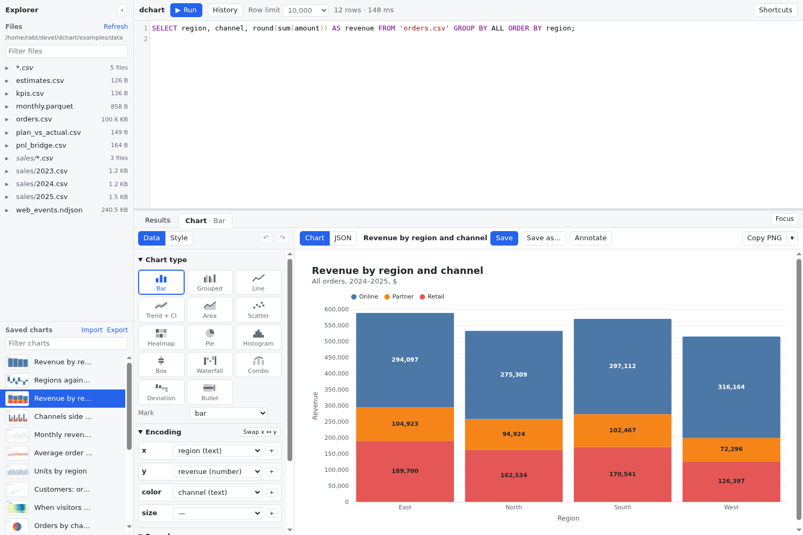
The editor
A SQL console that knows your files
Start dchart with --folder and every data file under it shows up in the sidebar, subfolders included. Click one to preview it, or query it by name.
- Run what's under the cursor. Ctrl+Enter runs one statement, or the selection. Long queries show their progress and can be stopped.
- Globs for folders of files. A folder of CSVs gets a
sales/*.csventry that reads them as one table, lining up columns by name. - Parameters. Write
$regionand an input appears above the editor. A saved chart keeps its values. - Tables that last. With
--db file.duckdb, the tables you create are still there next time. - Autocomplete, history and errors that point at the line.
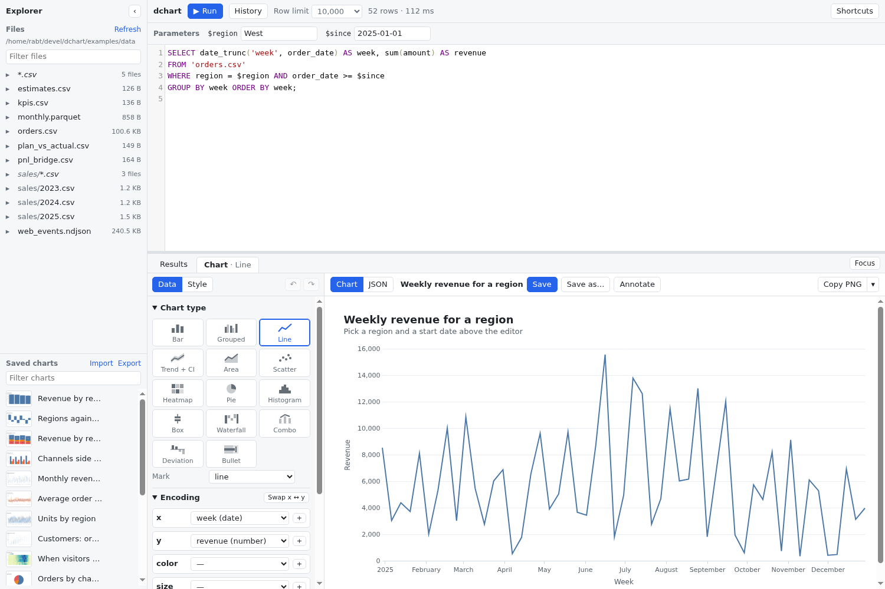
The chart builder
Fourteen chart types, filled in from your columns
Run a query and dchart picks a chart type and fills the fields from your column names and types. Switch types and the fields you chose come along where they fit. Every setting has undo and redo, and the builder remembers where you left off.
- BarComparisons, stacked by a second field
- GroupedSide-by-side bars per category
- LineSeries over time, with end labels
- Trend + CIA line with its confidence band
- AreaStacked totals over time
- ScatterTwo measures, with size and colour
- HeatmapTwo categories and a value per cell
- PieParts of a whole, kept to a few
- HistogramThe shape of one measure
- BoxSpread and outliers by group
- WaterfallChanges to a running total
- ComboBars and a line on two axes
- DeviationAbove and below zero, sorted
- BulletActual against target and bands
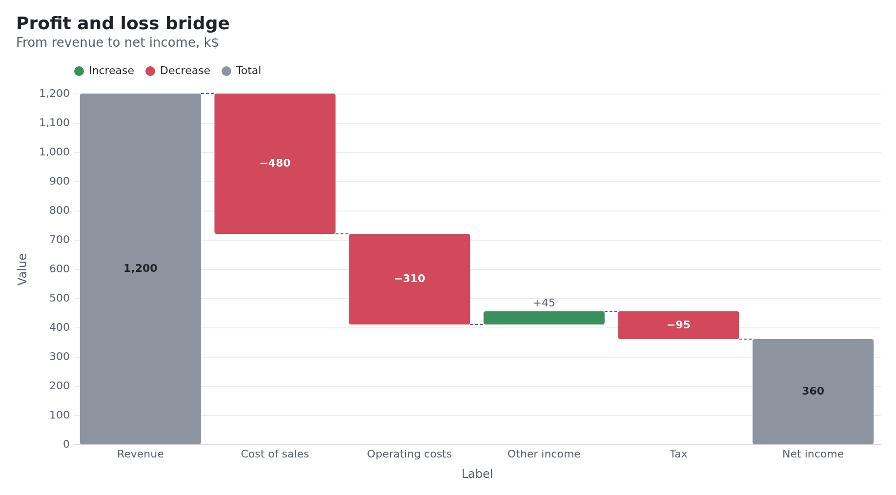
A profit-and-loss bridge. Totals come from an is_total column, or from the first and last rows. Dotted connectors carry the running total from bar to bar.
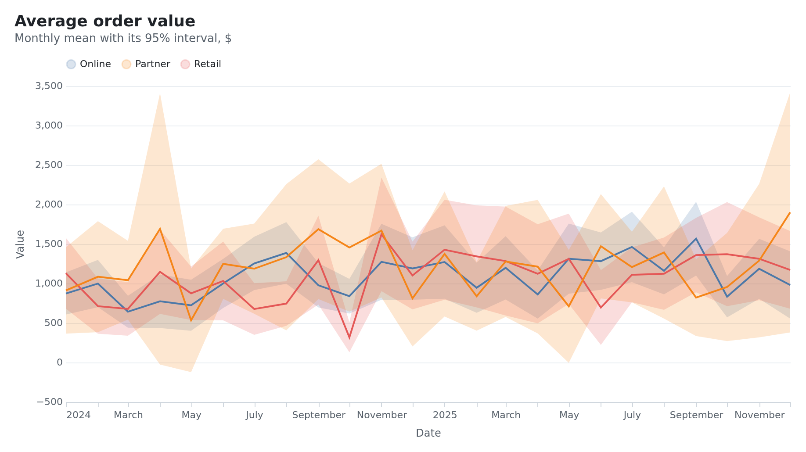
Average order value per channel with its 95% interval. Bounds can come from two columns, or dchart computes them from the raw rows: CI of the mean, standard error, standard deviation or IQR.
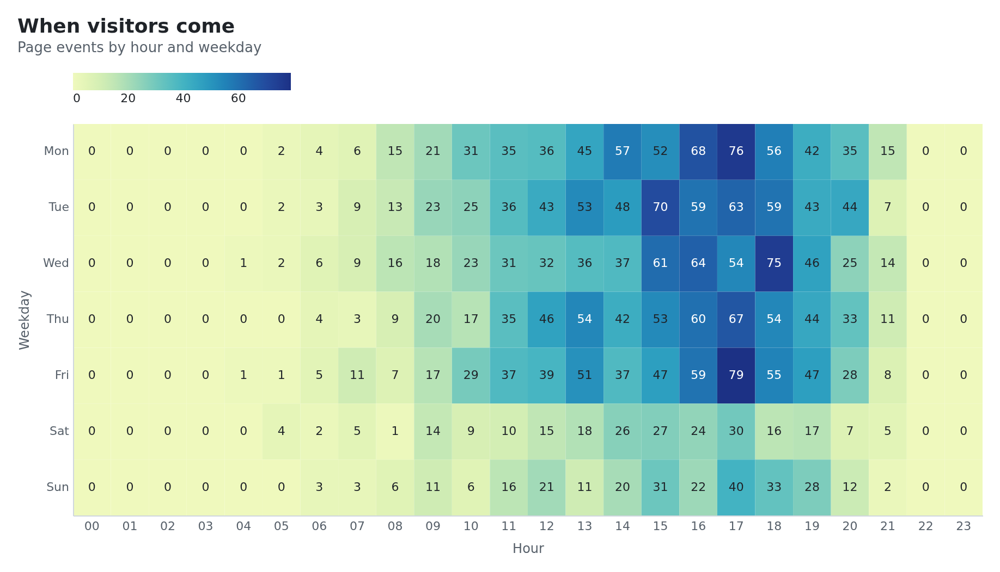
Page events by hour and weekday. Each cell's count is printed in white or dark ink, whichever reads better on that cell's colour.
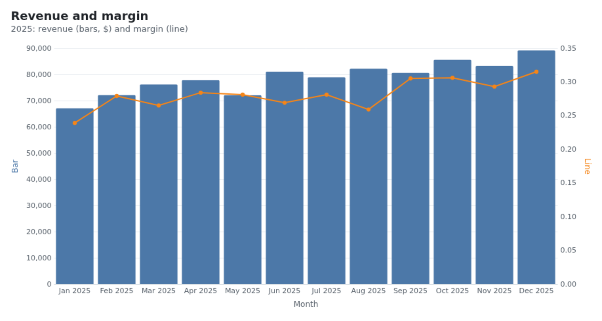
Revenue as bars and margin as a line, each on its own axis. Name the columns bar and line and it's picked automatically.
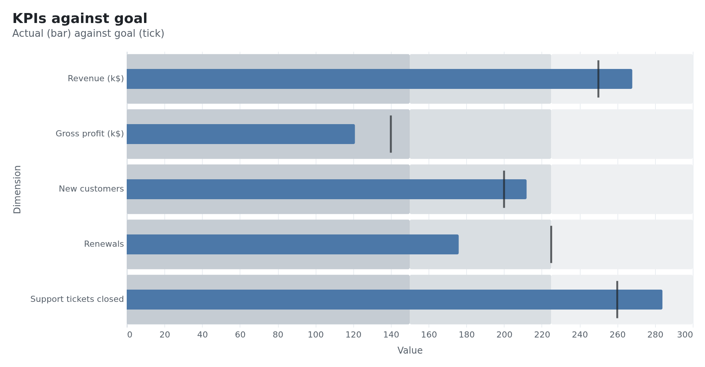
KPIs against their goals: the bar is the actual value, the tick the target, and the grey bands are the ranges you set.
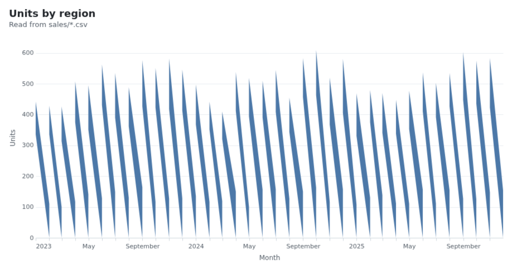
Three years of units by region, read from sales/*.csv: three yearly files queried as one table.
Publication theme
Labels you can read on any bar
A value label is only useful if it's legible. dchart measures each bar and segment as the chart draws: a label goes inside when it fits, in white or dark ink by contrast with the colour behind it, and moves outside when it doesn't. That keeps working when you change the colour scheme.
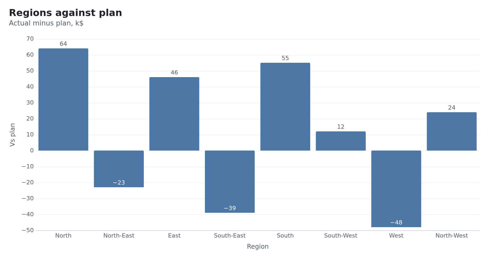
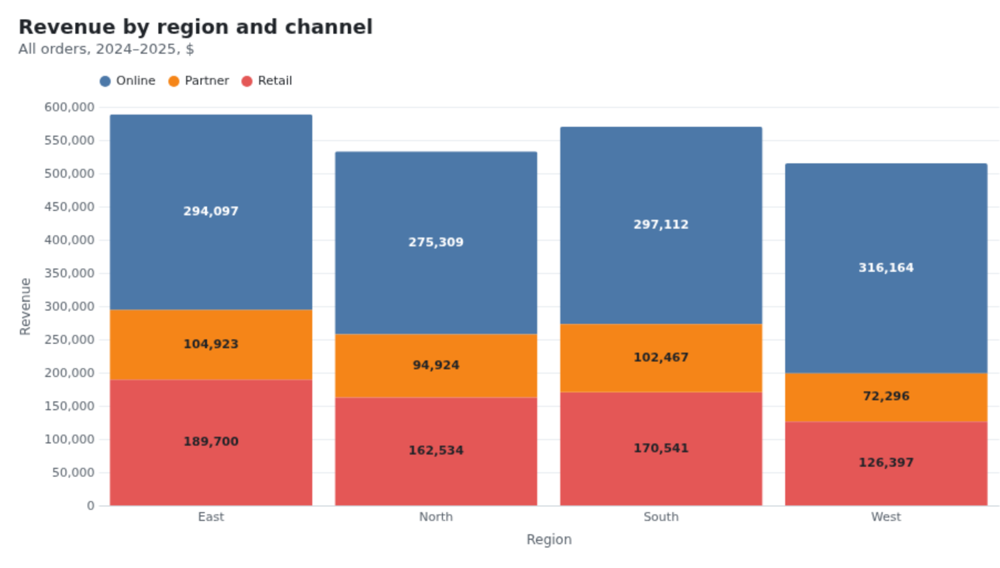
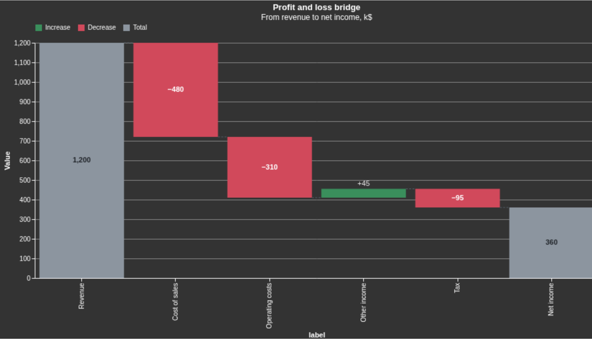
And the rest of the publication look
- A left-aligned title over a muted subtitle, with padding all round.
- Horizontal axis labels and humanized titles:
deal_sizebecomes "Deal size". - Many or long categories turn into horizontal bars on their own.
- Reference lines at a value, the mean or the median, and shaded bands.
- Annotations: press A, click a point, type. Drag the box clear of the data.
- Prefer another look? The vega-themes set is one menu away.
Works with asql
Explore in dchart. Publish with asql.
Once a chart looks right, copy it as an asql chart block and paste it into a report. The fields, titles, labels, intervals, reference lines and annotations carry over as asql keys.
Anything asql has no key for is listed on a -- note: line instead of being dropped silently, along with any column aliases asql needs to read the chart the same way.
-- @chart: trend
-- title: Average order value
-- subtitle: Monthly mean with its 95% interval, $
-- @x: date
-- @y: value
-- @series: series
-- show-points: false
-- ci: ci_low | ci_high
-- height: 360px
SELECT date_trunc('month', order_date) AS date, channel AS series,
avg(amount) AS value,
avg(amount) - 1.96 * stddev(amount) / sqrt(count(*)) AS ci_low,
avg(amount) + 1.96 * stddev(amount) / sqrt(count(*)) AS ci_high
FROM 'orders.csv' GROUP BY ALL ORDER BY date;Copied from dchart with Export ▾ → asql chart block, for the Trend + CI chart above.
Getting it out
Every chart and every row, in the format you need
Images
PNG and SVG, as a download or straight to the clipboard. Copy PNG sits in the toolbar for pasting into a doc or a slide.
All the rows
Results export as CSV, Parquet, Excel or JSON lines. "All rows" runs the query again through DuckDB's COPY, so the row limit doesn't apply.
The spec
The Vega-Lite spec with its data and theme included, to drop into a web page or notebook. Or edit the JSON and keep working on it as a custom spec.
Saved charts
Each saved chart keeps its query, settings, parameters and a thumbnail. Rename, filter, and share them as one JSON file.
asql blocks
A chart becomes an -- @chart: block for an asql report, with a note on anything that doesn't carry over.
Example data included
The download ships a folder of made-up data and a saved chart for every chart type. Import charts.json to see them all.
Your data stays on your machine
dchart is a single binary with DuckDB, Vega-Lite and the editor built in. It needs no network, no account and no server beyond the one it runs on localhost.
Localhost only
It listens on localhost, and its API answers only its own page. Other sites open in your browser can't run SQL through it.
Works offline
Every library is bundled, so it works on a plane and behind a firewall. Your charts are kept in ~/.config/dchart.
DuckDB inside
Query CSV, Parquet and JSON files directly, or a .duckdb database. One connection lasts the session, so tables you create stay around.
Questions
What do I need to run it?
Linux or macOS (x86-64 or arm64) or Windows (x86-64), and a web browser. On Linux and macOS the install script puts dchart and its DuckDB library in ~/.local/lib/dchart and links ~/.local/bin/dchart; on Windows, install.ps1 puts them in %LOCALAPPDATA%\dchart and adds it to your PATH. Nothing else to install.
Does it need internet access?
No. The editor, Vega-Lite and DuckDB are all inside the download. The only exception is a DuckDB extension you install yourself, such as INSTALL excel; for Excel export.
Where are my charts saved?
In ~/.config/dchart/charts.json, or under DCHART_CONFIG_DIR if you set it. Export them all to one file to share them or move them to another machine.
Can I keep my tables between sessions?
Yes. Start dchart with --db file.duckdb and the tables you create are saved in that file. Without it, DuckDB runs in memory and your files are only read.
How does it relate to asql?
They work together. dchart is for exploring one chart at a time, interactively. asql builds a whole report from an annotated .sql file. Copy a dchart chart as an asql block and paste it into the report.
Can I go beyond the builder?
Yes. The JSON view shows the Vega-Lite spec behind every chart. Edit it and apply it as a custom spec, with the full Vega-Lite grammar available.